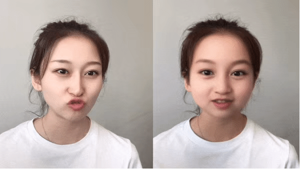

Audio/video samples from several Ke Fang's currently working projects..
As the main contributor to develop the first GAN-based magic stickers in the world that succeed to run on both high/low-end mobile devices among iOS and Android. Over a million videos used it on Kuaishou(快手) app two days after this sticker is online.

Samples generated by my MusicGAN project trained on the task of unconditional generating raw Mozart's piano notes.
Samples from the model without any condition.
Samples from the model using a bias of 1.0.
The first 5 seconds of each audio clip are from the dataset and the remaining 5 seconds are generated by the model.
Samples generated by my modified Tacotron based TTS trained on ~20h Mandarin Chinese single-speaker dataset. The model can run on mobile devices in real-time.
Samples from my TTS model, sentences below are randomly chosen from zhihu.com.
“感谢您选购世纪佳缘网，我们将为您提供优质的服务和放心的产品。”
““中国氢弹之父”于敏，于1月16日在京去世，享年93岁。于敏毕业于北京大学，后被著名物理学家钱三强、彭桓武调到中科院近代物理研究所。”
“我看了整场发布会，感觉抖音这家公司或者说今日头条这家公司真的是有一些精神分裂。”
“岳云鹏的相声经常性的在台上中断表演，针对某个观众说一些态度比较激烈的话。”
“作为一个正在进行时的舔狗，我感觉我有必要在这里宣泄释放一下，文字表达能力有限，反正就这样吧”
Samples of using Multi-Speaker TTS model for Speaker-Adaptation. We trained the model on ~800 speakers TTS, then collect ~1min new speakers audio for adaption, below is the results on two famous voices.
Samples of Guo Degang(郭德纲) and Chibi Maruko-chan(樱桃小丸子(国语版)).
“想要带你去浪漫的土耳其。”
“海中月是天上月。”
“亲爱的李岩倪，我是你最喜爱的郭德纲老师。”
“阿倪姐姐我是樱桃小丸子，旁嘎思密达！。”
Samples generated by my implementation of paper Neural Discrete Representation Learning(VQ-VAE) on the task of voice-style transfer with VCTK dataset.
The left audio is ground-truth, the right is the results.
“We are encouraged by the news.”
“It was a breathtaking moment.”
“Who was the mystery MP?”
“Under Alex Ferguson, Aberdeen showed it could be done.”
Samples generated by my open-source repo randomCNN-voice-transfer.
Samples generated by the model conditioned on text and speaker ID. The conditioning text and speaker IDs are taken directly from the validation set (text in the dataset is unnormalized and unpunctuated).
it wasn't like i was asking for the code to a nuclear bunker or anything like that but the amount of resistance i got from this
and what that form is modeling and shaping is not cement
that every person here every decision that you've made today every decision you've made in your life you've not really made that decision but in fact
syria was largely a place of tolerance historically accustomed
and no matter what the rest of the world tells them they should be
the years went by and the princess grew up into a beautiful young woman
i spent so much time learning this language why do i only
and we were down to eating one meal a day running from place to place but wherever we could help we did at a certain point in time in
phrases and words even if you have a phd of chinese language you can't understand them
and when they came back and told us about it we really started thinking about the ways in which we see styrofoam every day
is only a very recent religious enthusiasm it surfaced only in the west
chances are that they are rooted in the productivity crisis
i cannot face your fears or chase your dreams and you can't do that for me but we can be supportive of eachother
the first law of travel and therefore of life you're only as strong
Samples generated by the model for selected speakers. Reference audio for each of the speakers can be found on the TED website.
A cramp is no small danger on a swim.
He said the same phrase thirty times.
Pluck the bright rose without leaves.
Two plus seven is less than ten.
The glow deepened in the eyes of the sweet girl.
Bring your problems to the wise chief.
Write a fond note to the friend you cherish.
Clothes and lodging are free to new men.
We frown when events take a bad turn.
Port is a strong wine with a smoky taste.